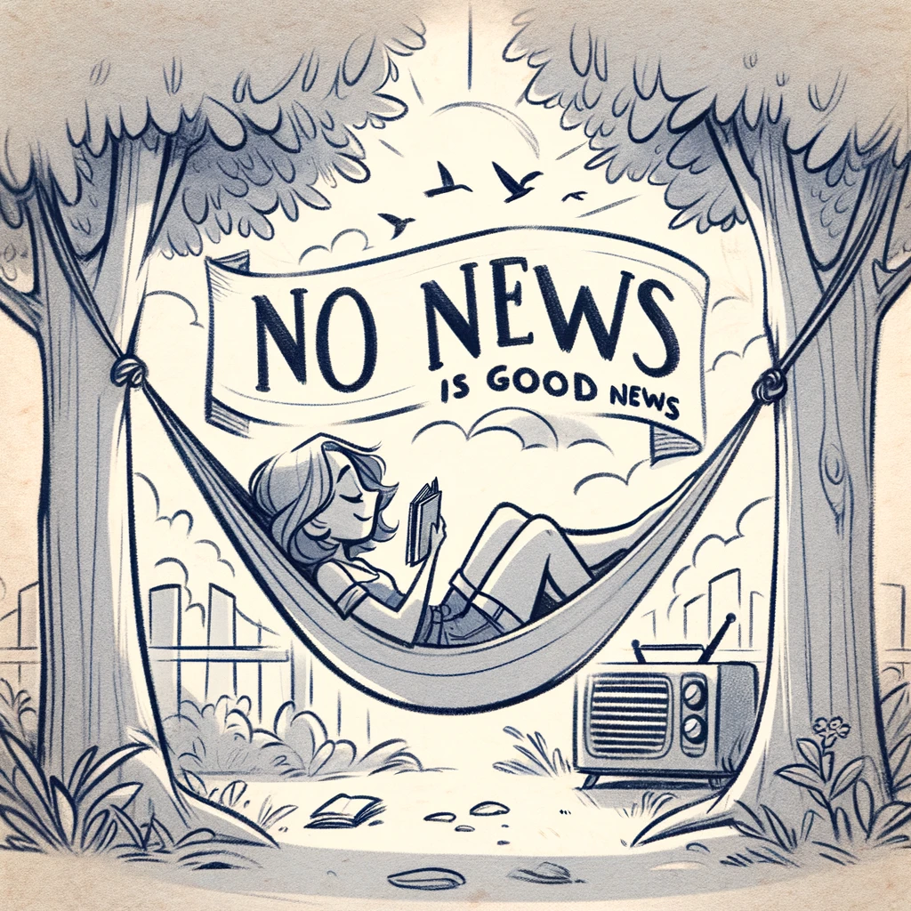

Yuejie Chi
Group News
|  |
2025
Jun. 2025: Timofey received the NSF Graduate Research Fellowship. Congratulations!
Feb. 2025: Tong received the Wei Shen and Xuehong Zhang Presidential Fellowship from CIT. Congratulations!
2024
Dec. 2024: Tian received the IEEE SPS Best PhD Dissertation Award. Congratulations! [News]
Aug. 2024: Shicong has successfully defended! He joined a hedge fund and will endow our group someday.
May 2024: Laixi's thesis won the CMU ECE A.G. Milnes Award, which is awarded to a graduating ECE PhD student for the PhD thesis work judged to be of the highest quality and which has had or is likely to have significant impact in his or her field. Congratulations!
-
Mar. 2024: Xingyu received the Axel Berny Presidential Graduate Fellowship in ECE. Congratulations!
Jan. 2024: Our implicit regularization paper received the SIAM Activity Group on Imaging Science Best Paper Prize. [News]
-
Jan. 2024: Harry received the Wei Shen and Xuehong Zhang Presidential Fellowship from CIT. Congratulations!
-
Jan. 2024: Yuejie served as the program co-chair for the first Conference on Parsimony and Learning (CPAL) in Hong Kong.